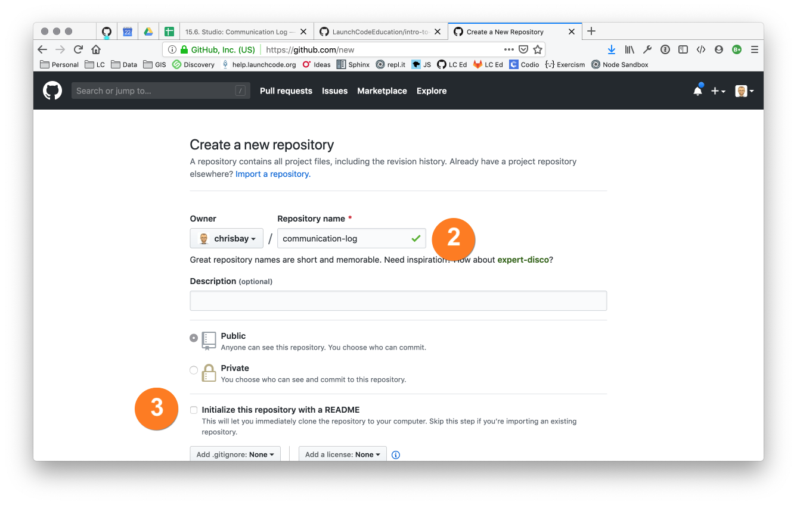
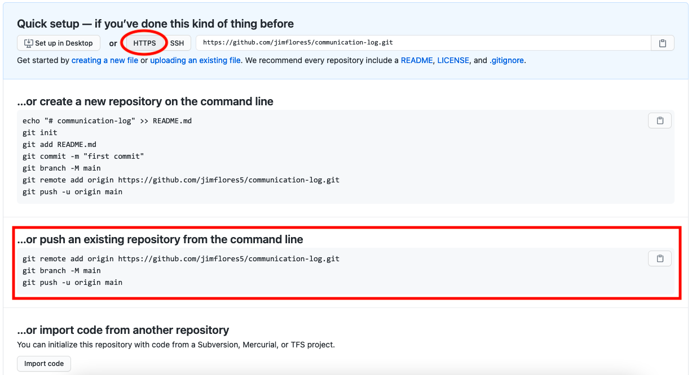
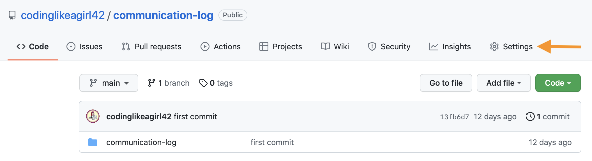
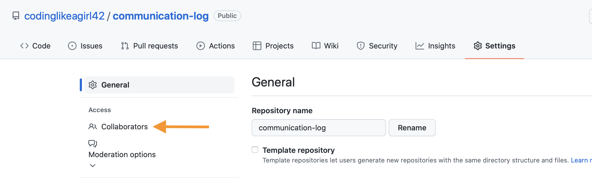

15.7. Studio: Communication Log¶
15.7.1. Getting Ready: Code Together¶
Coding together allows you to work as a team so you can build bigger projects faster.
In this studio, we will practice the common Git commands used when multiple people work on the same code base.
You and a partner will begin by coding in tag-team shifts. By the end of the task, you should have a good idea about how to have two people work on the same code at the same time. You will learn how to:
- Quickly add code in pull + push cycles (Important! This is the fundamental process!)
- Add a collaborator to a GitHub Project
- Share repositories on GitHub
- Create a branch in Git
- Create a pull request in GitHub
- Resolve merge conflicts (which are not as scary as they sound)
This lesson reinforces:
- Creating repositories
- Cloning repositories
- Working with Git concepts: Staging, Commits, and Status
15.7.2. Overview¶
The instructor will discuss why GitHub is worth learning. You already know how to use a local Git repository with one branch, giving you the ability to move your code forward and backward in time. Working with branches on GitHub extends this ability by allowing multiple people to build different features at the same time, then combine their work. Pull requests act as checkpoints when code flows from branch to branch. We are going to simulate a radio conversation between the shuttle pilot and mission control.
Students must pair off for this exercise. If you have trouble finding a partner, ask your TA for help.
You and your partner will alternate tasks, so designate one of you as Pilot and the other as Control. Even when it is not your turn to complete a task, read and observe what your partner is doing to complete theirs. The steps here mimic how a real-world collaborative Git workflow can be used within a project.
15.7.3. Step 1: Create a New Repository¶
Note
Be careful if you try to use copy/paste with the git commands! The
$ symbols in the screenshots represent the prompts in the terminal.
They are NOT part of the commands.
15.7.3.1. Windows instructions:¶
Control: Navigate to your development folder and enter the following 3 commands to create a new project.
$ mkdir communication-log $ cd communication-log $ git init
Now that you have a directory, open Visual Studio and create a new console project.
Give your solution and project a name (1). Typically they will have the same name.
Then select the directory to store your files (2).
Browse for the directory you just created by clicking on the box with the ... inside (3).¶
Setting Up a .gitignore File
A .gitignore file is a text file that will contain untracked files or ignored files.
These are files that will become part of your repo but are not very useful to other developers.
Placing them in a .gitignore file will tell git to skip over them, which will reduce visual clutter in your terminal.
Mac Users this is part of your initial configuration.
Windows Users: There are a few steps to create a .gitignore file.
Select the Git tab. Scroll down to Settings.
Settings will open the Source Control option. Under Sorce Control select Git Repository Settings then General in the right-side pane, look for the Git files section. Select Add for Ignore file: Select OK to add your new files.
{kind=link}
{kind=link}
Again, this is only one way to create this type of file. Use it as a starting point, and grow from here.
15.7.3.2. Mac Instructions:¶
Control: Open Visual Studio and create a new project.
{kind=link}
15.7.4. Step 2: First Commit¶
- Control
- Run your new project to make sure it works.
- Use the terminal to
commityour new console app. You can use your stand-alone terminal or use the terminal built-in to your IDE. In Visual Studio, the terminal is found in the View menu. - Once in your terminal, commit your project.
Great! We’ve got our project going locally, but we’re going to need to make it
accessible for Pilot also. Let’s push this project up to GitHub.
15.7.5. Step 3: Share Your Repository On GitHub¶
- Control:
Go to your GitHub profile in a web browser. Click on the “+” button to add a new repository (called a repo for short).

The New Repository link is in the dropdown menu at top right on GitHub.¶
Fill in the name and description.
Uncheck Initialize this repository with a README and click Create Repository.
Create a new repository in GitHub¶
Note
If you initialize with a README, in the next step Git will refuse to merge this repo with the local repo. There are ways around that, but it’s faster and easier to just create an empty repo here.
Connect your local repo to GitHub by copying the code for pushing into an existing repo. Remember, you already initialized and committed your console app.
Now go back to your terminal and copy/paste the commands shown in the GitHub instructions. These should be very similar to:
$ git remote add origin https://github.com/your-username/communication-log.git $ git branch -M main $ git push -u origin main
Note
The first time you push up to GitHub, you will be prompted in the terminal to enter your account username and password. Do this.
You will then see a large amount of output that you can safely ignore. The final few lines will confirm a successful push. They will look something like this:
To github.com:your-username/communication-log.git c7f97814..54993de3 main -> main
Notice that if your local branch was named
masterit was automatically changed tomain.Warning
Unless you’ve set up an SSH key with GitHub, make sure you’ve selected the HTTPS clone URL. If you’re not sure whether you have an SSH key, you probably don’t.
Confirm that GitHub has the same version as your local project (file contents match) by refreshing your GitHub page. Click around and see what is there. You can read all your code through GitHub’s web interface.
15.7.6. Step 4: Clone a Project from GitHub¶
- Pilot:
Go to Control’s GitHub profile and find the communication-log repo.
Click on the green Code button. Clone the HTTPS (not SSH) url. Copy the url to your clipboard.
In your terminal, navigate to your development folder and clone down the repo.
The command should look something like this.
$ git clone https://github.com/chrisbay/communication-log.git
Now you can respond to Control!
Open the
communication-log.slnfile in your editor and add your response to mission control. Be creative, the communication can go anywhere! Just don’t ask your partner what you should write.Note
When you open the project folder, you might not be in the same directory as the solution. You want to open the solution or
.slnfile. A quick way to do that from the terminal is tocdinto the folder that is holding the solution and then typeopen .slnon a Mac andstart .slnin Windows.After you finish,
commityour change.Now we need to
pushup your changes so Control can use them as well.$ git push origin main ERROR: Permission to chrisbay/communication-log.git denied to Pilot. fatal: Could not read from remote repository. Please make sure you have the correct access rights and the repository exists.
Great error message! It let us know exactly what went wrong: Pilot does not have security permissions to write to Control’s repo. Let’s fix that.
15.7.7. Step 5: Add A Collaborator To A GitHub Project¶
- Control:
In your web browser, go to your
communication-logrepo.Click the Settings button
Click the Collaborators button
Click the green Add people button to invite collaborators.
Enter in Pilot’s GitHub username.
When you see Pilot’s profile, select it and then click Select a collaborator above.
You should now see a “Manage access” pane on GitHub. Pilot’s username should be visible along with their collaboration status. At this point, you should see “Pending invite”.
15.7.8. Step 6: Join the Project and Push¶
- Pilot:
Check your email. You should receive an email invitation to join this repository.
View and accept the invitation.
This should take you to Control’s repo.
Note
If you don’t see an email (it may take a few minutes to arrive in your inbox), check your Spam folder. If you still don’t have an email, visit the repository page for the repo that Control created (ask them for the link), and you’ll see a notification at the top of the page.
Now let’s go enter that command again to
pushup our code.$ git push origin main Counting objects: 9, done. Delta compression using up to 4 threads. Compressing objects: 100% (9/9), done. Writing objects: 100% (9/9), 1.01 KiB | 0 bytes/s, done. Total 9 (delta 8), reused 0 (delta 0) remote: Resolving deltas: 100% (8/8), completed with 8 local objects. To git@github.com:chrisbay/communication-log.git 511239a..679de77 main -> main
Anyone reading the code through GitHub’s browser interface should now see the new second line.
- Control
- If you refresh the collaboration page, the “Pending invitation” should disappear once Pilot has accepted the invite.